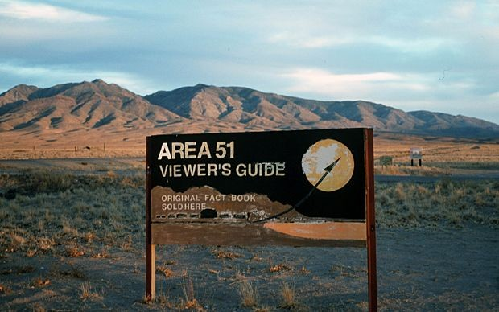
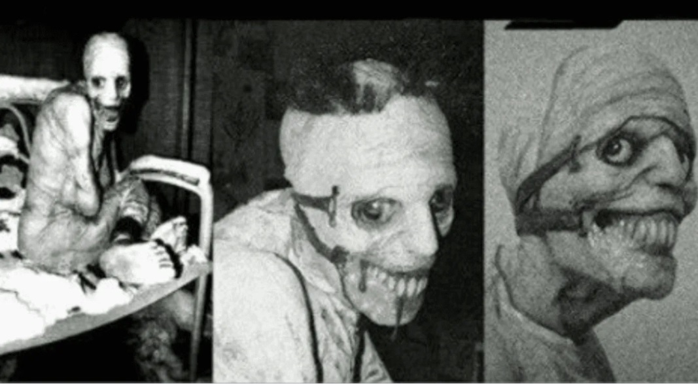
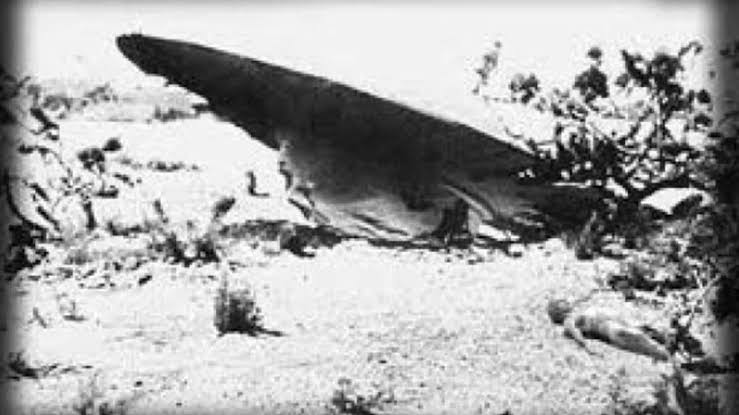

El Área 51
Introducción
Durante décadas, el Área 51 ha sido para muchos un lugar donde el Gobierno de EE.UU. guarda oscuros secretos sobre alienígenas y ovnis. Según dijo el propio Gobierno en 2013, no es más que una base de la Fuerza Aérea, pero eso no ha detenido las teorías de conspiración que afirman que el Área 51. Recientemente se confirmó que EE.UU. ha invertido 22 millones de dólares investigando ovnis.
¿Qué es?

Es una instalación de la Fuerza Aérea de EE.UU. en Groom Lake, Nevada. En 2013, la CIA desclasificó documentos que oficialmente reconocían que la zona era una base militar secreta. Fue la primera vez que el Gobierno reconocía la existencia del Área 51.
Según ese reporte, ahora sabemos que la instalación fue usada para probar los programas de vigilancia aérea U-2 y Oxcart.
Origen
Campo de entrenamiento El Área 51 se creó en plena Guerra Fría, cuando Estados Unidos y la Unión Soviética se mostraban los dientes y solo estaban a la espera de ver quién se atrevía a golpear primero.
Estados Unidos necesitaba un lugar aislado y seguro para probar las armas con las que enfrentarían a los rusos, así que el entonces presidente Dwight D. Eisenhower aprobó que una zona en el desierto de Nevada se utilizara como laboratorio y campo de entrenamiento secreto de la Fuerza Aérea.
De este modo nació la base militar en el Área 51, un terreno de más de 12.000 km2 cerca de zonas donde se realizaban pruebas nucleares.
¿Qué hay en el Área 51? (Teorias)
Se habla mucho de algunas teorias de lo que esconde esta base secreta, una de ellas es el proyecto Abigail.
Es el caso del denominado “Proyecto Abigail”, uno de los primeros experimentos que supuestamente se llevaron a cabo en el Área 51. Si bien la mayoría sabe que podría tratarse solo de una leyenda urbana, cada cierto tiempo la historia vuelve a reflotar en redes sociales con nuevos elementos propios de una película de terror.
La supuesta teoría se centra en una joven universitaria, de nombre Abigail Wester, hija de Albert Wester, uno de los empleados del Área 51, y quien estaba a cargo de varios experimentos en el país norteamericano.
De acuerdo con la leyenda, todo ocurrió a finales de la Segunda Guerra Mundial, precisamente después de que el Área 51 fuera designada como base militar y científica para el desarrollo de proyectos confidenciales.
De ese modo, la teoría apunta a que Wester y su equipo necesitaban un voluntario de confianza para su nuevo experimento, por lo que el científico habría decidido utilizar a su propia hija, según consigna el diario electrónico Vanguardia.
Si bien se desconoce el propósito del proyecto, se cree que la joven fue expuesta a distintas dosis de radiación para intentar determinar cómo afectaba a los humanos y de ese modo encontrar la fórmula para volverse resistentes a ella.
Fue así como tras dos años de experimentar con Abigail, Wester notó que había perdido a su hija. Al parecer, su piel se había vuelto gruesa y arrugada. Asimismo, sus dientes crecieron más de lo normal y adoptó un forma monstruosa.
Al ver en lo que había convertido a su hija, el sujeto habría optado por suicidarse y dejar a sus colegas la encomienda de volver a la joven a la normalidad. No obstante, luego de su deceso, los empleados del Área 51 habrían abandonado a Abigail para que muriera de hambre.
Posteriormente habría escapado del lugar, para esconderse en el desierto. De acuerdo a la terrorífica leyenda urbana, todavía se puede escuchar a Abigail rondando por Nevada.
Te dejamos el siguiente video donde explican sobre esta teoria.
O también te dejamos la siguiente pagina donde encontraras más información sobre esta Teoria.
Otra teoria es "El caso Roswell
El alguacil llamó a su vez a la base militar aérea más cercana que recogió todos los escombros encontrados en aquella zona y se los llevó en camiones blindados.
Uno de los funcionarios de la Fuerza Aérea trató de tranquilizar a la población tras ese titular asegurando que el supuesto platillo volante era un globo meteorológico que se había estrellado. No convenció mucho. Los restos se podían ver en las fotografías mostradas por el periódico y era bastante evidente que no formaban parte de un globo meteorológico, pero ¿de qué sino? La teoría más rocambolesca ganó a la más sencilla.
Hasta 1978, el caso Roswell quedó como una anécdota de la zona, hasta que los investigadores Stanton T. Friedman y William L. Moore compararon una serie de entrevistas que cada uno había realizado por separado. La versión de la nave de origen extraterrestre resurgía y se le añadían detalles sobre cadáveres de alienígenas.
Durante varias décadas la historia fue cogiendo fuerza y creciendo. En 1995 se presentó la supuesta filmación de una autopsia a un extraterrestre caído en Roswell. Se terminaría reconociendo que era una farsa. Pero, incluso el astronauta del Apolo 14, Edgar Mitchell, aseguró contar con la confirmación de altos cargos del gobierno que el caso Roswell tenía relación con ovnis y seres no terrestres.
Sucesivos descubrimientos de objetos extraños y seres sin cara en la región de Nuevo México junto el silencio de las autoridades, avivaban las historias sobre extraterrestres secuestrados por el gobierno estadounidense para examinar sus naves y cuerpos. No obstante, las explicaciones no acabaron ahi
También les dejamos el siguiente link donde podran ver más sobre esta Teoria.